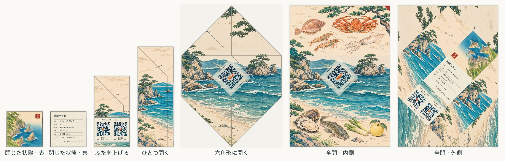

IWAMI / SEEDS & SCENERY
一枚の絵を、
ひと包みに。
A4を切らずに折る、7.4 cm角の小さな種の包み。
開くたびに、浦富海岸と岩美八宝の絵が現れます。
中身は、岩美駅前で採れた観賞用かぼちゃ Big Max の種、3粒。
のり・はさみ・シールなしで、最後の舌を差し込みます。

印刷して、折る。
印刷設定
- A4・両面・長辺とじ
- 実際のサイズ／100%。「用紙に合わせる」は使わない
- 1ページ目が内側、2ページ目が外側
- 紙は切らず、そのまま折る
絵と内側右上の赤い角印は紙の端まであります。印刷所のふちなし印刷がいちばんきれいです。家庭用プリンターでは紙端が白い線として残り、角印は小さく欠けます。まず1枚で表裏位置とQRを確認してください。
紙端4.5 mmが印刷できない場合の予想図
折る順番
- 内側を上にし、四つの角を折り込む。
- 右上の赤い角印の側の長い辺から順に、二つの長い辺を折って巻物状にする。
- 種の小袋を中央に置き、上の四角を折る。
- 下の舌を、手前の折りの下へ差し込む。
ばらの種を直接入れず、内袋を使います。包みは観賞用・配布用で、食品の包装ではありません。
畑で、一株一果。
ビッグマックスは、見て楽しむ大きなかぼちゃ。十分な広さの畑で、最後は一株に良い実を一つだけ残し、大きな一玉を目指します。
使う・つくり替える。
現在の公開柄は浦富海岸。原画4枚と、折り目に合わせて切り分け・配置するビルドツールも公開しています。絵と型紙は CC BY 4.0、コードは MIT。フォントはIBM Plex Sans JP / IBM Plex Sans（OFL）です。
ソースと原画 · 素材とライセンス · 岩美町の中の人 · X
絵は本人がWeb GPTで生成したイメージです。風景・物産の位置関係や形を正確に記録した資料ではありません。